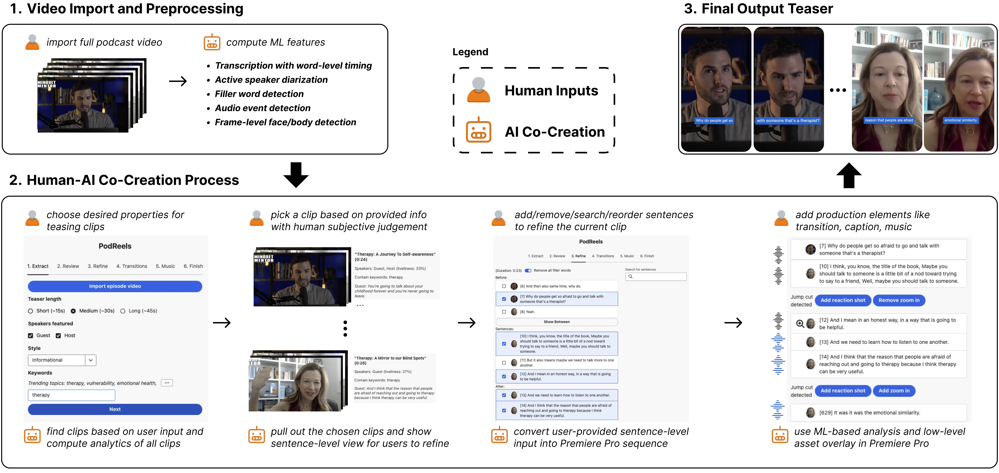
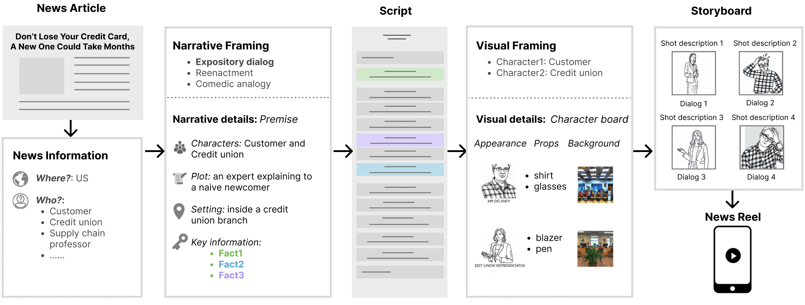
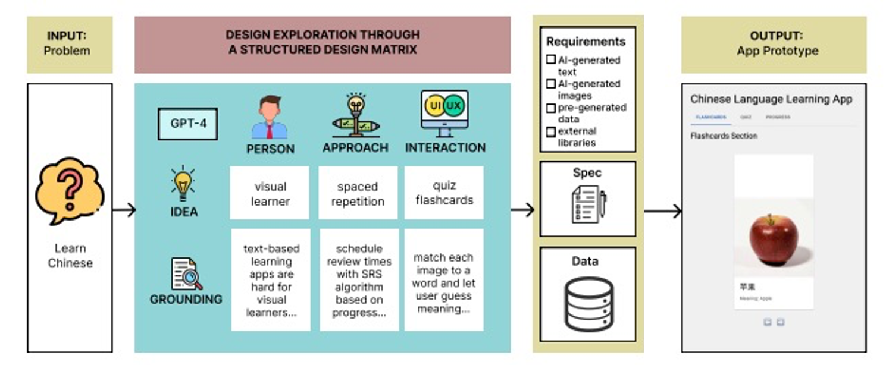

|
Sitong Wang I am a Computer Science PhD candidate at Columbia University. I work with Prof. Lydia Chilton in the Computational Design Lab. My research focuses on Human-AI interaction. I develop AI-powered systems to enhance human creativity and productivity. I am on the job market for industry research positions. If you know of any suitable openings, please feel free to reach out! |
{kind=link}
Publications |
|
Schemex: Discovering Design Patterns from Examples through Iterative Abstraction and Refinement
Sitong Wang, Lydia Chilton [Paper] |
|
JumpStarter: Getting Started on Personal Goals with Adaptive Personal Context Curation
Sitong Wang*, Xuanming Zhang*, Jenny Ma, Alyssa Hwang, Zhou Yu, Lydia Chilton Under submission [Paper] [Video] |
|  |
PodReels: Human-AI Co-Creation of Video Podcast Teasers
Sitong Wang, Zheng Ning, Anh Truong, Mira Dontcheva, Ding Li, Lydia Chilton DIS 2024 [Paper] [Video] [Tech Transfer] |
|  |
ReelFramer: Human-AI Co-Creation for News-to-Video Translation
Sitong Wang, Samia Menon, Tao Long, Keren Henderson, Ding Li, Kevin Crowston, Mark Hansen, Jeffrey Nickerson, Lydia Chilton CHI 2024 [Paper] [Video] [Press] |
|
PopBlends: Strategies for Conceptual Blending with Large Language Models
Sitong Wang, Savvas Petridis, Taeahn Kwon, Xiaojuan Ma, Lydia Chilton CHI 2023 [Paper] [Video] [Press] |
|
The Role of Human Creativity in the Presence of AI Creativity Tools at Work: A Case Study on AI-Driven Content Transformation in Journalism
Sitong Wang, Jocelyn McKinnon-Crowley, Tao Long, Kian Lua, Keren Henderson, Kevin Crowston, Jeffrey Nickerson, Mark Hansen, Lydia Chilton Under submission [Paper] |
|  |
DynEx: Dynamic Code Synthesis with Structured Design Exploration for Accelerated Exploratory Programming
Jenny Ma, Karthik Sreedhar, Vivian Liu, Pedro Perez, Sitong Wang, Riya Sahni, Lydia Chilton CHI 2025 [Paper] [Video] |

|
Copying style, Extracting value: Illustrators' Perception of AI Style Transfer and
its Impact on Creative Labor
Julien Posture, Sitong Wang, Lydia Chilton CHI 2025 [Paper] [Blog post] |
|
MoodSmith: Enabling Mood-Consistent Multimedia for AI-Generated Advocacy Campaigns
Samia Menon, Sitong Wang, Lydia Chilton ICCC 2024 [Paper] [Project page] |
|
A Design Space for Intelligent and Interactive Writing Assistants
Mina Lee, Katy Gero, John Chung, [et al., including Sitong Wang] CHI 2024 [Paper] [Video] [Demo] |
|
Tweetorial Hooks: Generative AI Tools to Motivate Science on Social Media
Tao Long, Dorothy Zhang, Grace Li, Batool Taraif, Samia Menon, Kynnedy Smith, Sitong Wang, Katy Gero, Lydia Chilton ICCC 2023 [Paper] [Video] |
|
Metaphoraction: Support Gesture-based Interaction Design with Metaphorical Meanings
Zhida Sun, Sitong Wang, Chengzhong Liu, Xiaojuan Ma TOCHI 2022 [Paper] [Video] |
|
Know it to Defeat it: Exploring Health Rumor Characteristics and Debunking Efforts on Chinese Social Media during COVID-19
Wenjie Yang, Sitong Wang*, Zhenhui Peng*, Chuhan Shi, Diyi Yang, Xiaojuan Ma ICWSM 2022 [Paper] [Dataset] |
|
MetaMap: Supporting Visual Metaphor Ideation through Multi-dimensional Example-based Exploration
Youwen Kang*, Zhida Sun*, Sitong Wang, Zeyu Huang, Ziming Wu, Xiaojuan Ma CHI 2021 [Paper] [Video] |
|
“A Postcard from Your Food Journey in the Past”: Promoting Self-Reflection on Social Food Posting
Zhida Sun, Sitong Wang, Wenjie Yang, Onur Yürüten, Chuhan Shi, Xiaojuan Ma DIS 2020 [Paper] [Video] |